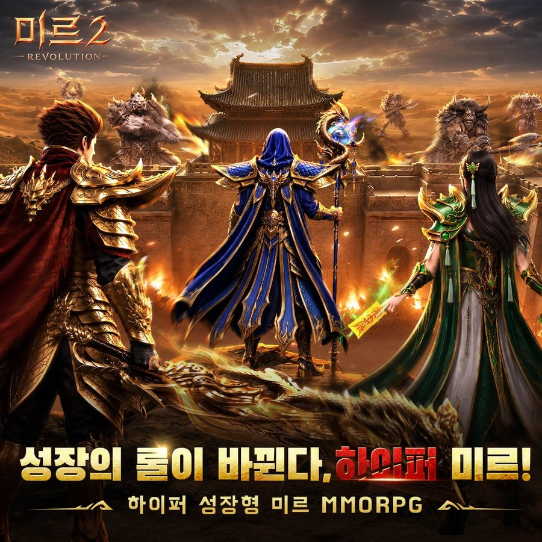
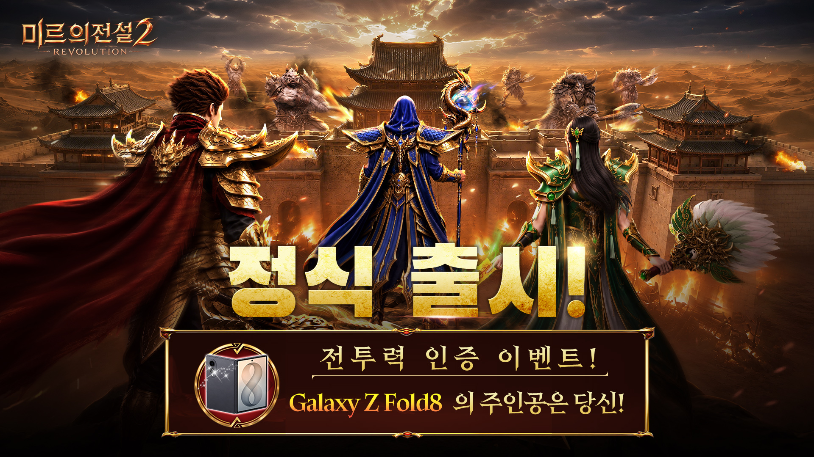
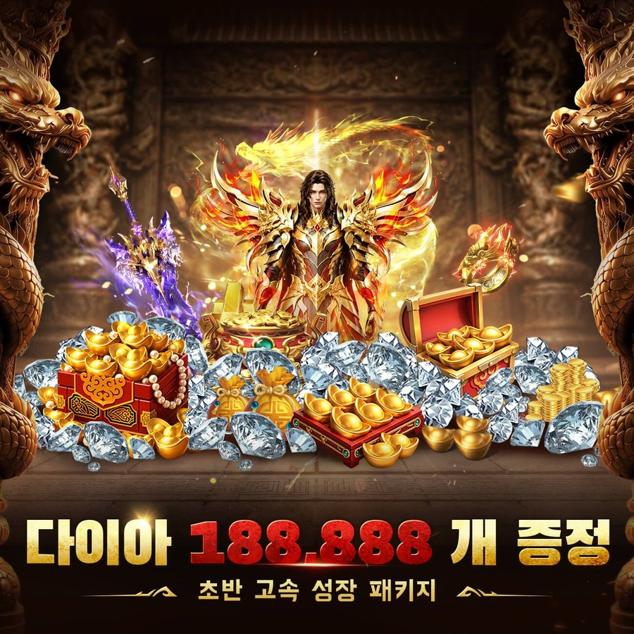
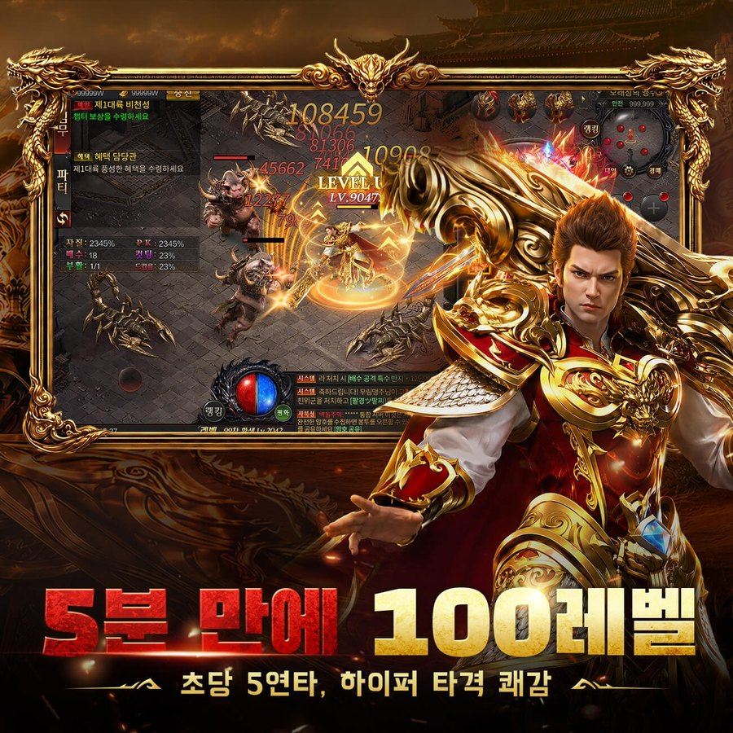
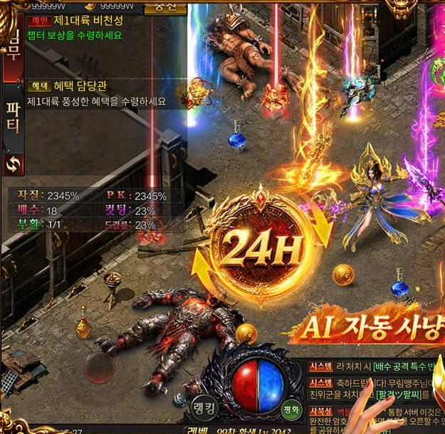
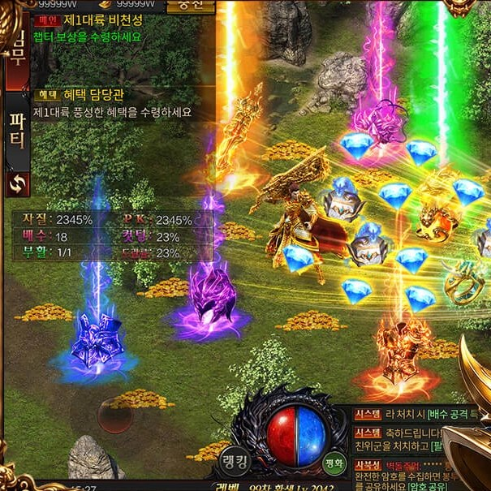
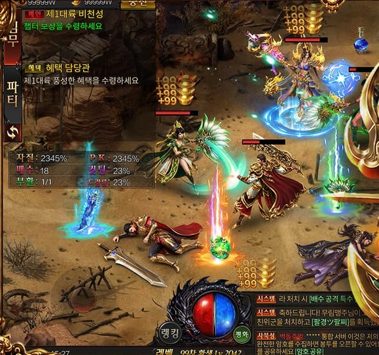
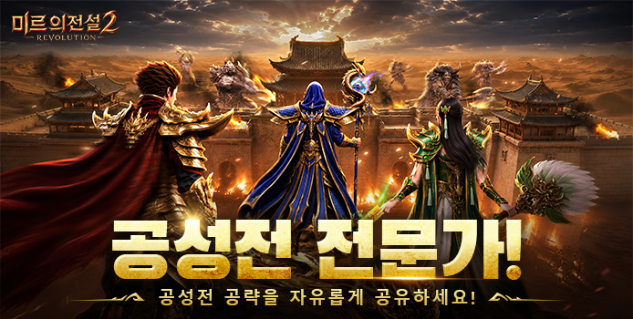
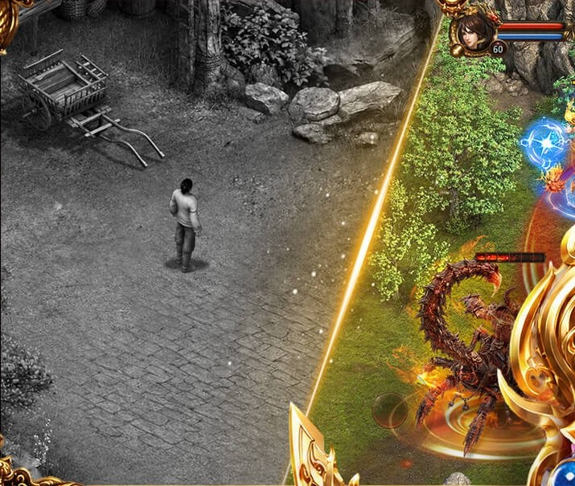

미르의 전설2: 레볼루션 정식 출시, 런칭 이벤트와 이수근 영상 한 번에 정리
11월 12일에 정식 출시된 미르의 전설2: 레볼루션은 출시 7일째인 11월 18일까지 나온 출시 정보와 런칭 이벤트, 공식 소개글의 성장 문구, 이수근 홍보 영상까지 한 번에 묶어 봤어요. 공식 라운지에 이벤트 공지가 연달아 올라와서 정리할 거리가 꽤 쌓였거든요.
'5분 만에 100레벨'이라는 말이 워낙 퍼져 있어서 궁금하신 분이 많을 텐데요, 그 문구가 어디에 적혀 있는지도 같이 짚어 볼게요. 주인장은 5분 컷(?)이라는 말만 들으면 일단 의심부터 하게 되더라고요. 이 글은 공식 소개글과 라운지 공지에 적힌 내용을 옮긴 거라, 직접 플레이해 본 얘기는 아닙니다.
1. 정식 출시 확인, 11월 12일
미르의 전설2: 레볼루션은 2026년 11월 12일(공식 라운지 공지 기준)에 정식 출시된 App Store 기준 12+ 등급의 무료 모바일 MMORPG입니다.
공식 라운지에는 11월 12일 오전 11시쯤 '정식 출시!' 공지가 올라왔고, 하루 앞선 11월 11일 밤에는 사전 다운로드 개시 공지가 먼저 나갔어요. 사전 다운로드는 구글플레이ㆍApp Storeㆍ갤럭시 스토어ㆍ원스토어 네 곳에서 받을 수 있다고 안내됐어요.
| 항목 | 내용 |
|---|---|
| 정식 출시일 | 2026년 11월 12일(공식 라운지 공지 기준) |
| 사전 다운로드 | 11월 11일 개시, 네 곳(구글플레이·App Store·갤럭시 스토어·원스토어) |
| 구글플레이 | 평점 약 4.6, 리뷰 2.27만 개(11월 18일 기준 상점 표기) |
| App Store | 평점 4.7, 평가 2,176건(11월 18일 기준 상점 표기) |
| 이용 조건 | 무료, 12세 이용가(App Store 12+) |

보시면 로고 아래쪽에 '성장의 룰이 바뀐다, 하이퍼 미르!' 슬로건이 적혀 있어요
이미지 출처: 공식 상점 이미지(원스토어 사전예약 페이지 · 미르의 전설2: 레볼루션)
평점은 스토어에 찍힌 숫자일 뿐이라 참고만 하시고요. 과금 쪽은 공식 홈페이지에 충전과 '최대 30% 페이백', VIP 안내가 따로 올라와 있다는 것만 짚어 둘게요. (공식 홈페이지)
2. 정식 출시 이벤트 정리
라운지 공지에서 일반 이용자가 지금 참여할 수 있는 이벤트는 서버 오픈 카니발, 하이퍼 미니 이벤트, 첫 공성전 소감 이벤트 세 가지입니다.

지금 보시는 이미지가 출시 공지에 걸린 카니발 이벤트 안내예요
이미지 출처: 공식 네이버 게임 라운지
| 이벤트 | 기간 | 참여법 | 보상 | 유의사항 |
|---|---|---|---|---|
| 서버 오픈 카니발 | 공지 기준 정식 출시 후 7일간(종료일은 공식 미기재) | 첫날 캐릭터의 레벨과 전투력 화면을 캡처해 댓글로 공유 | Galaxy Z Fold8 1명, 하이퍼 패키지 25명 | 계정당 1회, 당첨자는 종료 후 비밀 댓글로 수령 |
| 하이퍼 미니 이벤트 | 11월 15일~11월 20일 | '어디서 하이퍼 미르를 플레이하나요?'에 댓글로 답하기 | 이수근 친필 사인 사진 5명, 공성전 패키지 25명 | 당첨자 발송용으로 이름·주소·전화번호를 별도 수집할 예정 |
| 첫 공성전 소감 이벤트 | 11월 16일부터 상시 | 첫 공성전 소감이나 건의를 댓글로 남기기 | 공성 보물 800(선착순) | 계정당 1회 |
공식 문구를 읽다 보니 레벨과 전투력 화면만 올리면 되는 카니발이 참여 문턱이 제일 낮아 보이더라고요.
하이퍼 미니 이벤트 이미지에는 이수근이 홍보모델로 표기돼 있어요
이미지 출처: 공식 네이버 게임 라운지
이 밖에 유튜브 스트리머를 대상으로 한 하이퍼 스트리머 챌린지(신청 11월 12일~21일, 방송 11월 12일~12월 11일, 첫 시즌 총상금 1,400만 원 세전)가 열렸고, 사전 다운로드 인증 이벤트는 정식 출시와 함께 마감됐어요. 11월 15일 19:00~21:00에 열린 특집 라이브 방송 채팅 캡처 인증 이벤트(공성전 패키지 30명)도 이미 종료됐고요. 더 많은 이벤트는 공식 라운지(https://game.naver.com/lounge/INFINITE_Awakening/board/5)에서 확인하세요.
3. 공식이 내건 성장 문구 읽기
공식 상점 소개글이 내건 성장 문구는 다이아 188,888개, 5분 만에 100레벨, 초당 5연타, 24시간 AI 자동 사냥 네 가지예요.
- 접속 즉시 다이아 188,888개 : 구글플레이와 App Store 소개글은 이 다이아에 초반 성장용 패키지까지 별다른 조건 없이 준다고 소개합니다.
- 5분 만에 100레벨 : 소개글에 따르면 단 5분 만에 100레벨을 돌파한다고 내세워요.
- 초당 5연타 : 소개글의 표현은 '1초에 5번 몰아치는 극강의 공격 속도'예요.
- 24시간 AI 자동 사냥 : 공식 소개로는 오프라인 상태에서도 전투와 파밍이 이어진다고 해요.
네 가지 모두 공식 소개글의 문구입니다. 그래서 5분 컷은 홍보 문구로 받아들이시는 게 안전하다고 봐요.

그림 아래에 다이아 188,888개 증정과 초반 고속 성장 패키지가 적혀 있어요
이미지 출처: 공식 상점 이미지(원스토어 사전예약 페이지 · 미르의 전설2: 레볼루션)
다음 컷은 성장 속도를 내세우는 쪽입니다. 5분 100레벨과 초당 5연타가 한 이미지 안에 같이 들어 있어요.

공식 이미지에도 5분 100레벨과 초당 5연타 문구가 그대로 들어 있어요
이미지 출처: 공식 상점 이미지(원스토어 사전예약 페이지 · 미르의 전설2: 레볼루션)
주인장은 188,888이라는 숫자보다 '조건 없이'라는 표현이 더 눈에 들어오더라고요. 어떤 방식으로 들어오는지가 궁금하네요.

'24H' 아이콘 옆으로 'AI 자동 사냥' 글자가 보여요
이미지 출처: 공식 상점 이미지(원스토어 사전예약 페이지 · 미르의 전설2: 레볼루션)
오프라인에서도 사냥이 돈다는 건 바쁜 분들에게 반가운 소식이에요.
4. 현상금 사냥, 공성전, 그래픽
공식 소개글이 꼽는 콘텐츠는 필드 보스를 노리는 현상금 사냥, 사북성 공성전, 새로 만든 3D 그래픽 세 축이에요.
현상금 사냥은 전 필드에 보스가 깔려 있고 전설급 희귀 장비가 무작위로 떨어진다는 소개입니다.

드랍 연출이 필드 위로 쏟아지는 컷이에요
이미지 출처: 공식 상점 이미지(원스토어 사전예약 페이지 · 미르의 전설2: 레볼루션)
공성전의 무대는 사북성이고, 소개글 제목은 '성주 보상 100% 균등 분배'예요. 성주가 받는 보상을 참전한 용사 전원에게 똑같이 나눠 준다는 설명입니다. 라운지 11월 16일 공지가 '첫 공성전'을 언급한 걸 보면 공성전은 이미 한 번 열린 셈인데요, 날짜와 결과는 마무리에 적어 둘게요.

한 화면에 캐릭터가 몰려 교전하는 공성전 컷이에요
이미지 출처: 공식 상점 이미지(원스토어 사전예약 페이지 · 미르의 전설2: 레볼루션)

라운지 공성전 안내 이미지에는 '공성전 공략을 자유롭게 공유하세요!'라고 적혀 있어요
이미지 출처: 공식 네이버 게임 라운지
그래픽은 '신규 3D 모델링'과 '화려한 스킬 이펙트'를 앞세우는데요, 옛 흑백 화면과 새 컬러 화면을 나란히 놓은 공식 비교 컷이 있어요.

왼쪽이 흑백 옛 화면, 오른쪽이 컬러 새 화면이에요
이미지 출처: 공식 상점 이미지(원스토어 사전예약 페이지 · 미르의 전설2: 레볼루션) · 홍보용 비교 컷
확실히 달라 보이긴 하더라고요. 다만 홍보용 컷이라 실제 화면은 다를 수 있습니다.
5. 이수근 홍보 영상
이수근 홍보 영상은 공식 유튜브 '미르의 전설2: 레볼루션 (Official)' 채널(@XG130)에 올라온 53초 분량의 '이수근이 직접 고른 역대급 혜택?!' 편이에요. (영상 보기)
제목은 '[미르의 전설2: 레볼루션] 이수근이 직접 고른 역대급 혜택?! | 🎁 188,888 다이아부터 랜덤 보상까지!'이고, 업로드는 한국 시간 11월 11일입니다. 설명란은 출시 기념 특별 보상과 전용 세트, 랜덤 보상을 이수근이 직접 골라 더했다는 식으로 소개해요.
썸네일 자막은 '10만개!'예요
이미지 출처: 미르의 전설2: 레볼루션 공식 유튜브(@XG130)
이수근이 홍보모델로 발탁됐다는 소식은 10월 23일 데일리게임 보도로 알려졌고, 같은 채널에는 11월 15일(한국 시간) '"이런 게임은 안 합니다~" 이수근의 게임 선택 기준은?!' 영상도 올라와 있어요. 하이퍼 미니 이벤트 공지가 이 영상을 함께 소개하고 있어서, 이벤트와 영상이 한 묶음으로 움직이는 모양새입니다.
자주 묻는 질문
Q. 사전예약 보상은 어디서 받나요?
A. 소개글은 '접속 즉시 다이아 188,888개 증정'까지만 적고 있고, 라운지에 올라온 사전 다운로드 인증 이벤트는 댓글 추첨(300명)이었다가 정식 출시 전에 끝났어요.
Q. 이벤트 당첨 결과는 어디서 보나요?
A. 서버 오픈 카니발은 당첨자 명단을 공식 커뮤니티에 공개한다고 안내했어요. 발표는 라운지에서 살펴보세요.
짧게 추리면 11월 12일 정식 출시, 일반 이용자가 참여할 수 있는 라운지 이벤트 세 가지, 공식 소개글의 성장 문구 네 가지, 그리고 이수근 홍보 영상입니다. 반대로 이 글을 쓰며 공식 라운지 공지와 상점 소개글에서 찾지 못한 건 아래와 같아요.
- 서버 이름과 서버 수
- 사전예약 보상 수령 위치
- 서버 오픈 카니발 종료일
- 직업 구성(소개글에 직업 이름이 없어요)
- 5분 100레벨과 자동 사냥의 실제 체감, 현상금 사냥 드랍률
- 첫 공성전의 날짜와 결과, 카니발 당첨 발표 글
이벤트가 날마다 바뀌니 참여 전에 라운지부터 보시고요, 그럼 다음 글에서 만나요~!
▶ 같이 보면 좋은 글
· 미르의 전설2: 레볼루션 사전예약 프리뷰, 신작 모바일 MMORPG
참고한 곳 (2026.11.18 기준)
· 공식 네이버 게임 라운지 이벤트 보드
· 구글플레이 미르의 전설2: 레볼루션
· App Store 미르의 전설2: 레볼루션